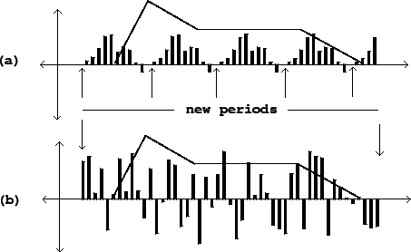
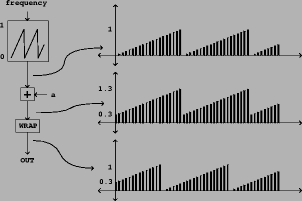

In the previous section we considered reading a wavetable either sporadically or repeatedly to make a sampler. In most real applications we must deal with getting the samples to start and stop cleanly, so that the output signal doesn't jump discontinuously at the beginnings and ends of samples. This discontinuity can sound like a click or a thump depending on the wavetable.
The easiest way to do this, assuming we will always play a wavetable completely from beginning to end, is simply to prepare it in advance so that it fades in cleanly at the beginning and out cleanly at the end. This may even be done when the wavetable is sampled live, by multiplying the input signal by a line segment envelope timed to match the length of the recording.
In many situations, however, it is either inconvenient or impossible to pre-envelope the wavetable--for example, we might want to play only part of it back, or we may want to change the sharpness of the enveloping dynamically. In Section 1.5 we had already seen how to control the amplitude of sinusoidal oscillators using multiplication by a ramp function (also known as an envelope generator), and we built this notion into the wavetable oscillators of Figures 2.3 and 2.4. This also works fine for turning samplers on and off to avoid discontinuities, but with one major difference: whereas in wavetable synthesis, we were free to assume that the waveform lines up end to end, so that we may choose any envelope timing we want, in the case of sampling using unprepared waveforms, we are obliged to get the envelope generator's output to zero by the time we reach the end of the wavetable for the first time. This situation is pictured in Figure 2.6.
|  |
In situations where an arbitrary wavetable must be repeated as needed, the simplest way to make the looping work continuously is to arrange for amplitude change to be synchronized with the looping, using a separate wavetable (the envelope). This may be implemented as shown in Figure 2.7. A single sawtooth oscillator is used to calculate lookup indices for two wavetables, one holding the recorded sound, and the other, an envelope shape. The main thing to worry about is getting the inputs of the two wavetables each into its own appropriate range.
In many situations it is desirable to combine two or more copies of the looping
wavetable sampler at the same frequency and at a specified phase relationship.
This may be done so that when any particular one is at the end of its segment,
one or more others is in the middle of the same segment, so that the aggregate
is continuously making sound. To accomplish this, we need a way to generate
two or more sawtooth waves at the desired phase relationship that we can use in
place of the oscillator at the top of Figure 2.7. We can start with
a single sawtooth wave and then produce others at fixed phase relationships
with the first one. If we wish a sawtooth which is, say,  cycles ahead of
the first one, we simply add the parameter
cycles ahead of
the first one, we simply add the parameter  and then take the fractional
part, which is the desired new sawtooth wave, as shown in Figure 2.8.
and then take the fractional
part, which is the desired new sawtooth wave, as shown in Figure 2.8.
|  |